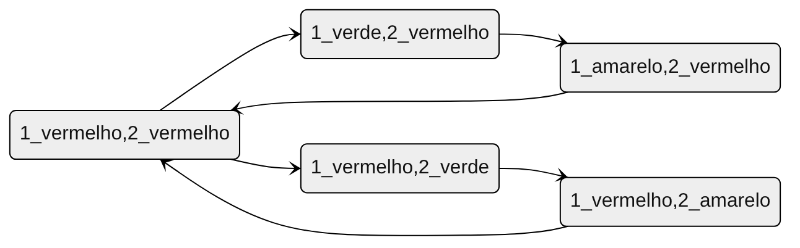
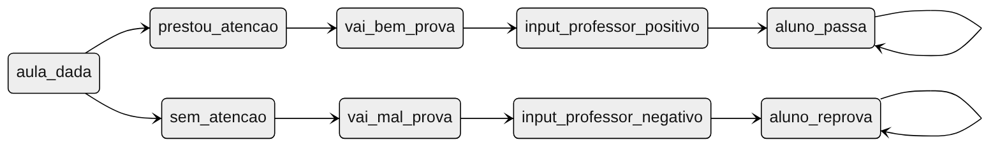
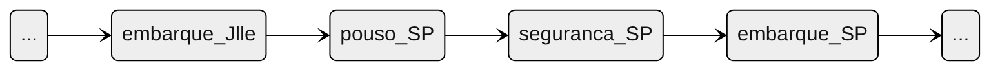
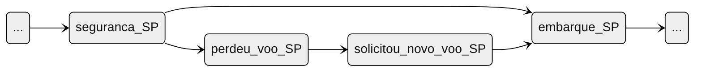

Estruturas de Kripke
SlidesTable of Contents
- 1. Sistemas de transições
- 2. Estruturas de Kripke
- 3. Não determinismo
- 3.1. Não determinismo nos semáforos
- 3.2. Não determinismo na realidade
- 3.3. Definindo a fronteira
- 3.4. Exemplo: Notas de alunos
- 3.5. Exemplo: Notas de alunos - input professor
- 3.6. Exemplo: Notas de alunos - escolhas dos alunos
- 3.7. Exemplo: Vôo com conexões
- 3.8. Exemplo: Vôo com conexões - Não determinismo
- 3.9. Exemplo: Vôo com conexões - Perdendo a conexão
- 3.10. Referências
1. Sistemas de transições
1.1. Sistema de transições: Definição
- Abstrações que descrevem o comportamento de sistemas com precisão matemática e sem ambiguidade (BAIER; KATOEN, 2008) .
- Podem ser vistos como grafos dirigidos onde
- Os nós são estados
- As arestas são transições
- Os nós são estados
Um estado descreve as informações de um sistema em um momento específico.
Uma transição descreve como um sistema pode mudar de um estado para outro.
1.2. Sistema de transições: Definição formal
Um sistema de transições é definido pela tripla \((S, \to, I)\) onde
- \(S\) é um conjunto de estados,
- \(\to\ \subseteq S \times S\) é uma relação de transições, e
- \(I \subseteq S\) é um conjunto de estados iniciais.
Um comportamento ou execução \(\rho\) de um sistema de transições é uma sequência de estados tal que
\[\rho = s_0, s_1, \dots\ tal\ que\ s_i \to s_{i+1}\ para\ todo\ i \geq 0\]
1.3. Sistemas de transições finito
Um sistema de transições é dito finito se e somente se \(S\) é finito.
Pergunta: Comportamentos de sistemas de transições finitos são sempre finitos?
Não! Comportamentos sobre uma sequência de estados ainda podem ser infinitos, mesmo que os estados sejam finitos.
1.4. Determinismo e Não-Determinismo
O conjunto de sucessores de um estado \(s\) é definido por \(Post(s) = \{ s' \in S\ |\ s \to s' \}\).
Um sistema de transições é dito determinístico se e somente se \(|I| \leq 1 \land \forall s \in S : |Post(s)| \leq 1\). Ou seja:
- Tem apenas um estado inicial, e
- Todo estado tem, no máximo, um sucessor.
Não-Determinismo acontece quando há múltiplos estados iniciais \(|I| > 1\) ou múltiplos sucessores para o mesmo estado (\(|Post(s)| > 1\)).
2. Estruturas de Kripke
2.1. Estruturas de Kripke
Estruturas de Kripke são um tipo de sistema de transições com uma restrição adicional:
A relação \(\to\) deve ser total
ou seja
\(\forall s \in S, \exists s' \in S : s \to s'\)
2.2. Exemplo: Semáforo
Um semáforo pode ser representado por uma estrutura de Kripke \((S, \to, I)\) onde
- \(S = \{ verde, amarelo, vermelho \}\)
- \(\to = \{ verde \to amarelo, amarelo \to vermelho, vermelho \to verde \}\)
- \(I = \{ vermelho \}\)

2.3. Exercício: Dois semáforos
Um sistema com dois semáforos pode ser representado por uma estrutura de Kripke \((S, \to, I)\) onde
- \(S = \{ (1: vermelho\ e\ 2: vermelho), (1: amarelo\ e\ 2: vermelho), (1: verde\ e\ 2: vermelho),
(1: vermelho\ e \2: amarelo), (1: vermelho\ e\ 2: verde) \}\)
- \(\begin{aligned}
\to\ = \{ &\\
& (1: vermelho\ e\ 2: vermelho) \to (1: verde\ e\ 2: vermelho),\\
& (1: verde\ e\ 2: vermelho) \to (1: amarelo\ e\ 2: vermelho),\\
& (1: amarelo\ e\ 2: vermelho) \to (1: vermelho\ e\ 2: vermelho),\\
& (1: vermelho\ e\ 2: vermelho) \to (1: vermelho\ e\ 2: verde),\\
& (1: vermelho\ e\ 2: verde) \to (1: vermelho\ e\ 2: amarelo),\\
& (1: vermelho\ e\ 2: amarelo) \to (1: vermelho\ e\ 2: vermelho),\\
\} &
\end{aligned}\)
\(I = \{ (1: vermelho\ e\ 2: vermelho ) \}\)

AF(B_verde)AF(A_vermelho & B_vermelho)
2.4. Exercício: Três semáforos
- Vish!
- Muita coisa pra escrever, certo?
- Um jeito melhor: linguagens de especificação
- Vamos perceber algumas generalizações
- Cada semáforo deve iniciar vermelho, e fazer o caminho vermelho \(\to\) verde \(\to\) amarelo enquanto os outros permanecem vermelhos.
- Quando um semáforo fecha, queremos que outro semáforo abra
- Com três semáforos, deve haver um revezamento que garanta que cada um vai abrir de vez em quando.
- Com três semáforos, deve haver um revezamento que garanta que cada um vai abrir de vez em quando.
- Cada semáforo deve iniciar vermelho, e fazer o caminho vermelho \(\to\) verde \(\to\) amarelo enquanto os outros permanecem vermelhos.
2.5. N semáforos em TLA+
2.6. N semáforos em Quint
Especificação completa no GitHub.
module semaforos { type Cor = Vermelho | Verde | Amarelo type Semaforo = int var cores: Semaforo -> Cor var proximo: Semaforo const SEMAFOROS: Set[Semaforo] action fica_verde(s: Semaforo): bool = all { proximo == s, SEMAFOROS.forall(s2 => cores.get(s2) == Vermelho), cores' = cores.set(s, Verde), proximo' = (s + 1) % SEMAFOROS.size(), } ... }
2.7. Perguntas
Todos os exemplos de semáforos (1, 2, 3 e N) são sistemas de transições. Quais deles são Estruturas de Kripke?
- Para um sistema de transições ser uma estrutura de Kripke, \(\to\) deve ser total:
- \(\forall s \in S, \exists s' \in S : s \to s'\)
- \(\forall s \in S, \exists s' \in S : s \to s'\)
- Resposta: Sim! Sempre há um passo para um próximo estado
- Para um sistema de transições ser uma estrutura de Kripke, \(\to\) deve ser total:
Os sistemas de semáforos são finitos?
- Um sistema de transições é dito finito se e somente se \(S\) é finito.
- Resposta: Sim! Os estados são um conjunto finito.
- Um sistema de transições é dito finito se e somente se \(S\) é finito.
Nossas definições de semáforo são determinísticas?
- O conjunto de sucessores de um estado \(s\) é definido por \(Post(s) = \{ s' \in S\ |\ s \to s' \}\).
- Sistema é deterministico sse \(|I| \leq 1 \land \forall s \in S : |Post(s)| \leq 1\)
- Resposta: Nem todas. A definição que demos para 2 semáforos contém não determinismo. As definições para 1 semáforo e N semáforos são determinísticas.
- O conjunto de sucessores de um estado \(s\) é definido por \(Post(s) = \{ s' \in S\ |\ s \to s' \}\).
3. Não determinismo
3.1. Não determinismo nos semáforos
Como seriam semáforos com não determinismo?
- \(Post(s) = \{ s' \in S\ |\ s \to s' \}\).
- Sistema é deterministico sse \(|I| \leq 1 \land \forall s \in S : |Post(s)| \leq 1\)
Qualquer estado pode ser um estado inicial. Se definirmos isso (\(I = S\)), temos não determinismo
- \(|I| \leq 1\) não é satisfeito
- \(|I| \leq 1\) não é satisfeito
Caso o primeiro semáforo a abrir não esteja definido
- \(|Post(1: vermelho\ e\ ...\ e\ N: vermelho\ e\ próximo: indefinido)| \leq 1\) não é satisfeito
- \(|Post(1: vermelho\ e\ ...\ e\ N: vermelho\ e\ próximo: indefinido)| \leq 1\) não é satisfeito
Caso a definição de próximo seja removida
- \(|Post(1: vermelho\ e\ ...\ e\ N: vermelho)| \leq 1\) não é satisfeito
- \(|Post(1: vermelho\ e\ ...\ e\ N: vermelho)| \leq 1\) não é satisfeito
3.2. Não determinismo na realidade
Onde podemos encontrar não determinismo em sistemas de software?
Escolhas de usuário
- Depósitos e saques
- Qualquer input em geral
- Depósitos e saques
Fatores aleatórios
- Se rolar 20 no dado, o dano é dobrado
- Se rolar 20 no dado, o dano é dobrado
Influências do ambiente
- Falha de hardware
- Falha na rede
- Falha de hardware
- Ordem de execução quando há concorrência
- Processo A executa antes do processo B
- Requisição A é recebida antes da requisição B
- Processo A executa antes do processo B
3.3. Definindo a fronteira
Ao especificar um sistema, especialmente quando há não determinismo, é preciso definir uma fronteira.
- Até aquela fronteira, fatores externos não especificados determinam o que acontece.
- O não determinismo é uma forma de abstrair esses fatores externos
- i.e. De A, vou pra B ou C. Isso depende de algum fator externo. Se é a jogada de um dado ou o input de um usuário, não me importa.
- Se isso me importa, então vou modelar a jogada de dado.
- i.e. De A, vou pra B ou C. Isso depende de algum fator externo. Se é a jogada de um dado ou o input de um usuário, não me importa.
3.4. Exemplo: Notas de alunos
Vamos considerar duas fronteiras diferentes:
O professor coloca uma nota no SIGA. Se a nota for \(\geq 7\), o aluno passa.
- Não determinismo no input do professor
- Não determinismo no input do professor
- O aluno pode ou não prestar atenção nas aulas. Se prestar atenção, vai se dar bem na prova, sua nota será maior que 7, e portanto vai passar.
- Não determinismo nas escolhas do aluno
- A nota que o professor dá é determinada pelas escolhas do aluno
- Não determinismo nas escolhas do aluno
No caso (2) estamos detalhando mais o mundo externo fora do SIGA, enquanto no (1) a fronteira é na interface do SIGA.
O caso (1) é uma especificação do SIGA, enquanto o (2) fala mais sobre um sistema universitário.
3.5. Exemplo: Notas de alunos - input professor
3.6. Exemplo: Notas de alunos - escolhas dos alunos

3.7. Exemplo: Vôo com conexões
Versão 1:
Joinville → São Paulo → Paris
Versão 2:
Check-in em Joinville → Despacho de Bagagem em Joinville → Check de Segurança em Joinville → Embarque em Joinville → Pouso em São Paulo → Check de Segurança em São Paulo → Embarque em São Paulo → Pouso em Paris → Retirada de bagagem em Paris
3.8. Exemplo: Vôo com conexões - Não determinismo
Onde poderia ter não determinismo?
- Chegar atrasado e perder o check-in
- Acharem uma bomba na bagagem
- Problemas técnicos no vôo
- Perder a conexão
Podemos ter não determinismo em cada estado. Nos casos listados, podemos ou não determinar o que acontece. Cabe ao nível de detalhe, ou a fronteira da nossa modelagem.
3.9. Exemplo: Vôo com conexões - Perdendo a conexão

